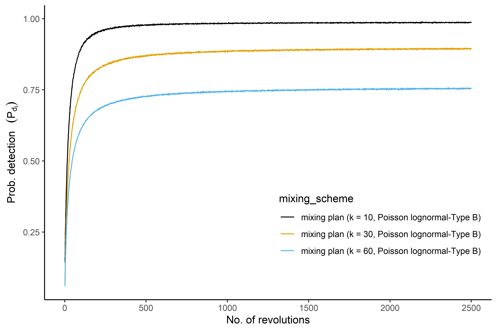

R/compare_mixing_1.R
compare_mixing_1.RdThis function provides a graphical display to compare mixing plans based on the estimated cumulative moving average (CMA) of detection probability at each revolution of the mixing process.
compare_mixing_1(mu, sigma, alpha_in, k, l, r, distribution, UDL, n_sim)
| mu | the average number of CFUs (\(\mu\)) in the mixed sample, which is in a logarithmic scale if we use a Lognormal / Poisson lognormal distribution |
|---|---|
| sigma | the standard deviation of the colony-forming units (CFUs) in the mixed sample on the logarithmic scale (default value 0.8) |
| alpha_in | concentration parameter at the initial stage |
| k | number of small portions / primary samples |
| l | number of revolutions / stages |
| r | the rate of the concentration parameter changes at each mixing stage |
| distribution | what suitable distribution type we have employed for simulation such as |
| UDL | the upper decision limit, which depends on the type of microorganisms and testing regulations. |
| n_sim | number of simulations |
graphical display of estimated cumulative average probability of detection at each revolution in the mixing.
Nauta, M.J., 2005. Microbiological risk assessment models for partitioning and mixing during food handling. International Journal of Food Microbiology 100, 311-322.
mu <- 100 sigma <- 0.8 alpha_in <- 0.01 k <- c(10,30,60) l <- 2500 rate <- 0.01 distribution <- "Poisson lognormal-Type B" UDL <- 0 n_sim <- 2000 compare_mixing_1(mu,sigma , alpha_in, k, l, rate, distribution, UDL, n_sim) 